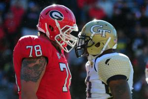

WELCOME TO THE FEUD! : What Defines a College Football Rivalry
July 30,2016

They do not like each other.
Rivalries are an integral part of any sport. They are often the most emotional games of the year and are the most apt to generate miraculously unusual results. As the saying goes “In a rivalry game, anything can happen”. This will be the first in our “WELCOME TO THE FEUD!” series where we will discuss the many rivalries in college football. Some are legendary, some are one sided and often forgotten, some are between teams you may not even realize are rivals, but all are unique in their own way and deserve to be celebrated. But before we start talking about specific rivalries I want to define what a rivalry in college football is.
In pro sports rivalries are often more clearly defined. Typically your rivals are the teams in the same division as you, it makes since that since you play and see them the most you would develop the strongest emotions in dealing with those teams. While this is not the case for every team, this is a general trend that can be followed across pro sports, teams you play the most are the ones you hate the most. Things are not always as clear cut in college football. Due to the size of the conferences, teams in the power 5 conferences play a minimum of 6 of the same teams every year not including out of conference rivals. The Big 12 has play up to 10 of the same teams on a yearly basis in conference alone! A team can’t call all of those games rivalries, as it loses the unique emotion naturally imbued with rivalry matches. For example Georgia Tech (by the way I went to GT so expect me to use them in a lot of examples) plays both the University of North Carolina and Duke every year. That said, I have no disdain over the fact that we play these teams; I enjoy going to Chapel Hill and Durham, I like the fans of both programs and find them very welcoming. Losing to those programs will upset me of course, but it won’t make me want to drink myself into a coma… well depending on how we lose. So what makes the difference for a Georgia Tech fan between facing programs like UNC and Duke compared to programs like U(sic)GA and Clem Tech? Well there are a few factors to consider.
PROXIMITY
As property experts will often tell you its all about location location location. Proximity of college football programs do play a big factor in what generates a rivalry. Many rivalries can simply be identified as a competition between the two most talented teams in the state. USC v. Stanford (or UCLA), Alabama v. Auburn, Michigan v. Michigan State, Clemson v. South Carolina, FSU v. Florida, Oklahoma v. Oklahoma State, Virginia v. Virginia Tech, Georgia Tech v. Georgia… The list goes on and on. And keep in mind many of these teams aren’t even a city apart, UNC and Duke for example are separated by a distance of only 10 miles. It’s so much more difficult to deal with an enemy team when you know as a student that you can be reminded of your past failures at any moment by running into an opposing fan while driving down the road; or as an alumni knowing that on the drive into work you’re going to see bumper stickers, flags, and license plates reminding you how great the fans of that opposing program think they are. Its especially hard when you know you work with individuals associated with that team, and they are willing to remind you of how they will crush you this year. If distance makes the heart grow fonder, closeness makes the hate burn stronger.
HISTORY
This one is pretty obvious. The more an opposing team has played you in the past, the more it feels like every loss etches onto your soul. But history isn’t limited to the number of games played, the overall team records, or the ridiculous upsets. because these are schools, and their fans remain active outside of every match you can often see the hate spread off of the field. Fan bases find ways to drive the hatred home 365 days a year. Campus plants get poisoned and TPeed, Mascots get stolen, graffiti and general campus damage are common. You might not think this is terribly unusual considering that most students are in their late teens and are known for partaking in a drink or two (or ten depending on how that last test went), but you are fooling yourself if you think these actions are limited to students alone. There are many cases of alumni getting assisting with spreading chaos between rivals off of the field. As a fan the only way I can reconcile these actions is if I see my team crush my rival on the football field.
RELIGION
This is something you won’t find in pro sports (well in The United States anyway). When many of these programs were founded there was a religious base that they were built around. Many programs still follow these tenets today, but even the ones that do not still pay homage by holding on to these old rivalries. The differences are spelled out in teams like Texas Christian University (affiliated with the disciples of Christ) and Southern Methodist University (they’re affiliated with Methodists if you couldn’t tell) but there are plenty of others that are less obvious. Notre Dame, the largest Catholic University in the nation, has a rivalry with Boston College (Jesuit Catholic) based around both schools ties to the catholic church. One of the biggest religious rivalries is the Holy War between Brigham Young University and Utah, who both hold some Mormon association (note: ND v. BC is also called the Holy War, however Utah v. BYU is more notorious for having this title). While many coaches and administrators would prefer to remove these issues from inter school rivalries, religion still plays a large factor in the strife between teams.
UN-ASSOCIATED FAN BASES
In pro sports you can pretty much be a fan of whatever team you want and not have it questioned. There’s no enrollment for being a Golden State fan, a Yankees fan, or a Patriots fan (although some would consider being an asshole part of the process); you just decide you like the team and that’s all there is to it. In college sports this is frowned upon. If you graduated from the university you are a fan of, it hurts to see opposing fans who have no association cheering against you. This can be seen clearly in the rivalry between Auburn and Alabama, where it is claimed by many Auburn that the majority of the massive Alabama fan base are band wagon fans who have never even visited the Tuscaloosa campus. Many alumni feel that college sports feel they can only be fully appreciated by students and graduates of the school… that said those alumni are only infuriated by band wagon fans of the school they hate, if a band wagon fan wants to cheer for the alumni’s school then they have no problem with that.
There are many other factors that play into big time college rivalries, and we’ll touch on those in future articles, but for now that will give you a basic summary of what makes a rivalry game something more than your typical conference competition. Rivalries are one of the biggest factors in what make college football great, and I’m looking forward to sharing information about some of these great sports events with you readers in the near future. Until then, be sure to keep your hate on lock down.
-Logan Sandor